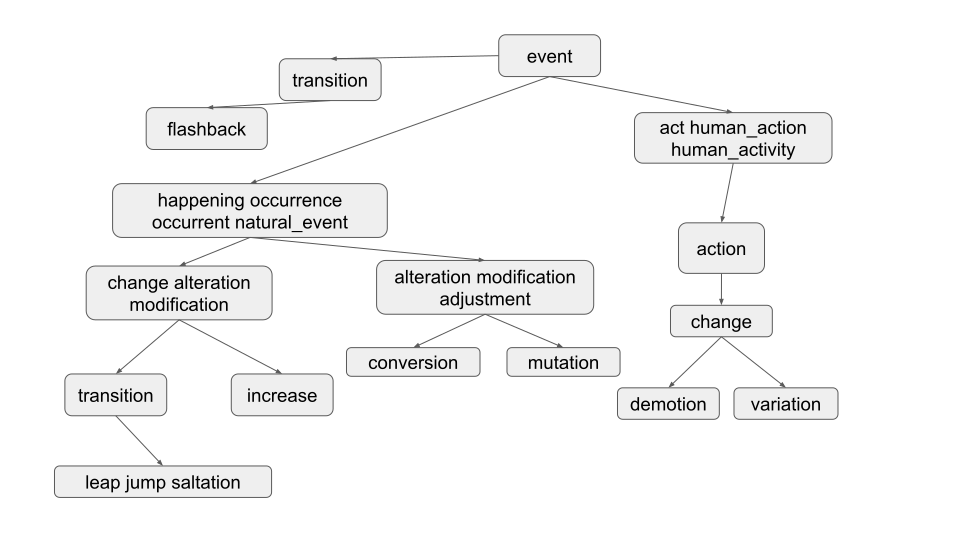

项目 2C：Ngordnet 增强
常见问题
每个作业顶部都会有一个常见问题链接。你也可以通过在 URL 末尾添加"/faq"来访问它。项目 2C 的常见问题位于 这里 。
检查点和设计文档截止日期：2024年3月15日
代码截止日期：2024年4月1日
在本项目中，你将完成 NGordnet 中
k!=0
和
commonAncestors
情况的实现。
由于这是一个相当新的项目，可能偶尔会有错误或对说明的混淆。如果你注意到任何此类问题，请在 Ed 上发帖。
在开始 2C 之前，请通读 2B 说明 。
项目设置
本项目的设置与其他实验/项目不同。请不要跳过这一步！
框架代码设置
-
与本课程的其他作业类似，运行
git pull skeleton main来获取本项目的框架代码。- 注意：你会注意到这个框架（几乎）与项目 2B 的框架完全相同。这是有意为之的。
-
使用
此链接
下载本项目的
data文件， 并将它们移动到你的proj2c文件夹中，与src同级。 -
将你在 2A 中实现的
ngrams代码（包括TimeSeries和NGramMap）复制到proj2c文件夹中。 -
将你在 2B 中的实现复制到
proj2c文件夹中，因为k!=0和commonAncestors将依赖于你在 2A 和 2B 中的实现。
完成后，你的
proj2c
目录应该如下所示：
proj2c
├── data
│ ├── ngrams
│ └── wordnet
├── src
│ ├── <2B helper files>
│ ├── browser
│ ├── main
│ ├── ngrams
│ │ ├── <Your NGramMap implementation from 2A>
│ │ └── <Your TimeSeries implementation from 2A>
│ └── plotting
├── static
└── tests
虽然你当然可以（而且应该！）提前为 2C 进行 设计 ，但我们建议仅在 你在项目 2B 中获得满分 之后才开始 编码 ，以防你的实现中有任何细微的错误。
开始
重要提示： 在开始编码甚至设计项目之前，你 真的 应该先完成 项目 2B/C： 检查点 。这将有助于你理解项目。我们还要求你向 Gradescope 提交一份 设计文档 。关于设计文档的更多细节可以在 交付物和评分 中找到。
项目的这一部分旨在让你为你的实现提出一个高效且正确的设计。你提出的设计对于处理这些情况将非常重要。在开始设计文档之前，请仔细阅读 2B 和 2C 的说明。
We’ve created 二 wonderful tools that you can (and should!) use to explore the dataset, see how the staff solution behaves for specific inputs, and get expected outputs for your unit tests (see 测试 Your Code ). We’ll link them here, as well as in other relevant parts of the spec.
- Wordnet 可视化工具 ：有助于直观理解同义词集和下义词的工作原理，并测试不同的单词/单词列表作为潜在的测试用例输入。点击"?"气泡了解如何使用此工具的各种功能！
- 教学人员解决方案网页 ：有助于为不同的测试用例输入生成预期输出。使用它来编写你的单元测试！
通读整个 2B/C 说明并完成 项目 2B/C： 检查点
完成检查点后，完成 设计文档
处理
k != 0
在项目 2B 中，我们处理了
k == 0
的情况，这是用户未输入
k
值时的默认值。
你的任务是处理用户输入
k
的情况。
k
表示我们希望在输出中包含的下义词的最大数量。例如，如果有人输入单词"dog"，然后输入
k = 5
，你的代码将最多返回 5 个单词。
要选择这 5 个下义词，你应该返回在请求的时间范围内出现次数最多的
k
个单词。例如，如果有人输入
words = ["food", "cake"]
、
startYear = 1950
、
endYear = 1990
和
k = 5
，那么你将找到该时间段内既是 food 又是 cake 的下义词的 5 个最流行的单词。这里，流行度定义为单词在整个请求时间段内出现的总次数。然后单词应按字母顺序返回。在这种情况下，如果我们使用
top_14377_words.csv
、
total_counts.csv
、
synsets.txt
和
hyponyms.txt
，答案是
[cake, cookie, kiss, snap, wafer]
。
确保你获取的是出现 次数 最多的单词，而不是 权重 最高的单词。否则，你会遇到非常难以调试的问题！
请注意，如果前端不提供年份，
NGordnetQueryHandler.readQueryMap
会提供 startYear = 1900 和 endYear = 2020 的默认值。
可能很难弄清楚
k != 0
时单词的下义词，所以我们提供了更容易可视化的数据！在下面，你将看到一个针对 EECS 课程要求的修改版本，灵感来自
HKN
。我们还提供了表示下图的数据（
frequency-EECS.csv
、
hyponyms-EECS.txt
、
synsets-EECS.txt
）。如果有人输入
words = ["CS61A"]
、
startYear = 2010
、
endYear = 2020
和
k = 4
，你应该收到
"[CS170, CS61A, CS61B, CS61C]"
。这个
frequency-EECS.csv
与之前的有点不同，因为它有相同频率的值。我们强烈建议你查看一下
frequency-EECS.csv
。此外，在设计实现时，请记住我们可能会给你具有相同频率的单词。
如果一个单词在指定的时间范围内从未出现，即计数为零，则不应返回它。换句话说，如果
k > 0
，我们不应该显示任何未出现在
ngrams
数据集中的单词。
如果没有非零计数的单词，你应该返回一个空列表，即
[]
。
如果非零计数的单词少于
k
个，则只返回这些单词。例如，如果你输入单词
"potato"
并输入
k = 15
，但只有 7 个
"potato"
的下义词具有非零计数，你将只返回 7 个单词。
这个任务会有点棘手，因为你需要弄清楚如何传递信息，以便
HyponymsHandler
知道如何访问有用的
NGramMap
。
修改你的
HyponymsHandler和实现的其余部分，以处理k != 0的情况。
交互式网页教学人员解决方案中不提供 EECS 课程指南，因此如果你输入
CS61A
，它不会返回任何内容。
不要为这个任务创建静态 NGRAMMAP！ 简单地创建某种可以从代码中任何地方访问的
public static NGramMap可能很诱人。这被称为"全局变量"。我们强烈反对这种编程思维方式，相反，我们建议你应该将 NGramMap 传递给构造函数或方法。我们将在软件工程讲座中回到这个话题。
提示
-
在你使用自动评分器之前，你需要构建自己的测试用例。我们在上一节中提供了一个：
words = ["food", "cake"]、startYear = 1950、endYear = 1990、k = 5。 - 在构建自己的测试用例时，考虑创建自己的输入文件。使用我们提供的大型输入文件非常繁琐。
寻找共同祖先
到目前为止，我们只关找单词的共同下义词。在本项目的最后一部分，你的任务是找到共同 祖先 。
也就是说，给定一组单词，哪些单词将给定的这组单词作为下义词？
例如，考虑 2B 中的
synsets16.txt
和
hyponyms16.txt
：

如果我们找到
"adjustment"
的祖先，我们应该得到
"[adjustment, alteration, event, happening, modification, natural_event, occurrence, occurrent]"
，如下图所示。

这也应该适用于具有多种含义的单词，如
"change"
所示：

"change"
的祖先应该是
"[act, action, alteration, change, event, happening, human_action, human_activity, modification, natural_event, occurrence, occurrent]"
。
我们还可以查找单词集合的 共同祖先 ，这可以揭示一些巧妙的关系！

在这里，我们找到
words = ["change", "adjustment"]
的共同祖先。结果应该是
"[alteration, event, happening, modification, natural_event, occurrence, occurrent]"
，这些是图中所有将
"change"
和
"adjustment"
都
作为下义词的单词。请注意，与你可能预期的相反，
"alteration"
和
"modification"
也包含在结果中，如下所述。
注意
：请确保像在 2B 中一样进行
单词交集
而不是
节点交集
，因此下图中
["test_subject", "math"]
的共同祖先应该返回
"[subject]"
，因为
"subject"
同时包含
"test_subject"
和
"math"
作为下义词，尽管
"test_subject"
和
"math"
在图中没有直接连接。

我们还可能要求三个或更多单词的共同祖先。
请注意，输出按字母顺序排列，并且请记住
k != 0
也可以应用于此任务。
你的查询处理对于共同祖先需要保持高效（即，应用于 2B 的超时在这里仍然适用）。这意味着，在较大的数据集上，遍历每个单词并检查它是否包含查询中的所有单词作为下义词会太慢！
NgordnetQueryType
你需要修改你的
HyponymsHandler
类，以考虑查询的
类型
，即下义词或共同祖先。这应该类似于你查找
startYear
、
endYear
或
k
的方式，这将分别用
NgordnetQueryType.HYPONYMS
或
NgordnetQueryType.ANCESTORS
来指定。
修改你的
HyponymsHandler和实现的其余部分，除了下义词查询外，还要处理共同祖先查询。
设计提示
如前所述，你不需要复制粘贴代码或做任何太激烈的事情来处理这个任务。考虑如何使用之前相同的数据结构和方法来解决这个问题，也许只需进行一些调整。
辅助方法是你的好帮手！如果你发现自己不止一次地编写类似的代码，可以考虑创建一个辅助方法，你可以从两个地方调用它，它会为你完成共同的工作。
交付物和评分
对于项目 2C，唯一需要提交的交付物是
HyponymsHandler.java
文件，以及任何辅助类。但是，我们不会直接对这些类进行评分，因为它们可能因学生而异。
- 项目 2B/C：检查点 ：5 分 - 截止日期：3月15日
-
项目 2C 编码：25 分 -
截止日期：4月1日
-
HyponymsHandler流行度-硬编码：20%，k != 0 -
HyponymsHandler流行度-随机：30%，k != 0 -
HyponymsHandler共同祖先：50%
-
除了项目 2C 之外，你还需要提交你的设计文档。这将价值 5 分，截止日期为 3 月 15 日。设计文档的主要目的是作为你项目的基础。在编码之前思考和构思是很重要的。我们在设计文档中寻找的内容：
- 确定你将在实现中使用的我们在课堂上学过的数据结构。
- 你的实现算法的伪代码/总体概述。
你的设计文档应该大约 1-2 页长。设计文档将主要根据努力、思考和完成度进行评分。
请复制 此模板 并提交到 Gradescope 。
如果你之后决定更改设计文档，请不要担心。你可以自由这样做！我们希望你在编码之前思考实现，因此我们要求你提交设计作为项目的一部分。
本项目的令牌限制政策如下：你将从 8 个令牌开始，每个令牌有 24 小时的刷新时间。
测试你的代码
我们在
proj2c/tests
目录中为你提供了两个简短的单元测试文件：
-
TestOneWordKNot0Hyponyms.java -
TestCommonAncestors.java
These test files are not comprehensive ; in fact, they each only contain 一 sanity check test. 你应该 fill each file with more unit tests, and also use them as a template to create 二 new test files for the respective cases.
If you need help figuring out what the expected outputs of your tests should be, you should use the 二 tools that we linked in the 入门指南 section.
调试技巧
-
测试时使用小文件！这减少了运行
Main.java的启动时间，并使代码推理更容易。如果你正在运行Main.java，这些文件在main方法的前几行中设置。对于单元测试，文件名会传递给getHyponymsHandler方法。 -
你可以使用调试器运行
Main.java来快速调试不同的输入。点击"Hyponyms"按钮后，你的代码将在调试器下执行——断点会被触发，你可以使用变量窗口等。 - 这个项目有很多活动部件。不要从逐行调试开始。相反，缩小到你的代码中哪个函数/区域不能正常工作，然后在这些行中更仔细地搜索。
- 查看 常见问题 了解常见问题和疑问。
提交你的代码
在整个作业中，我们让你使用前端来测试你的代码。我们的评分器不够复杂，无法假装是网络浏览器并调用你的代码。相反，我们需要你在
proj2c_testing.AutograderBuddy
类中提供一个方法，该方法提供一个可以处理下义词请求的处理器。
当你在本说明开始时运行
git pull skeleton main
时，你应该已经收到了一个名为
AutograderBuddy.java
的文件。
就像 2B 一样，打开
AutograderBuddy.java
并填写
getHyponymsHandler
方法，使其返回一个使用给定四个文件的
HyponymsHandler
。你在这里的代码可能与你在
Main.java
中的代码相似。
既然你已经创建了
proj2c.testing.AutograderBuddy
，你就可以提交到自动评分器了。如果你没有通过任何测试，你应该能够通过在上述测试文件的基础上构建，在本地将它们复制为 JUnit 测试。如果需要任何额外的数据文件，它们将作为链接添加到本部分。
可选额外功能
如果你想在这个项目中做得更多（甚至探索一些前端开发），请通读 可选功能 说明！
致谢
本作业的 WordNet 部分大致改编自 Alina Ene 和 Kevin Wayne 在普林斯顿大学的 Wordnet 作业 。